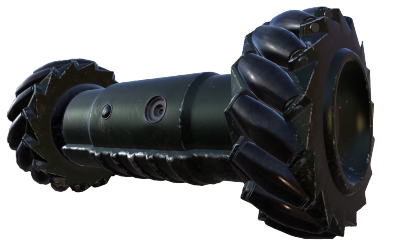
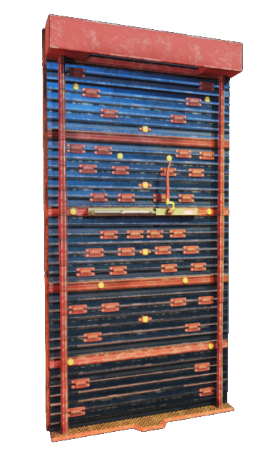

index.html:
- Background: Black HD Wallpaper. (n.d.). Retrieved November 28, 2017, from http://icloudpicture.com/color/black-hd-wallpaper/
- [Rainbow Six Siege Wallpaper]. (n.d.). Retrieved November 27, 2017, from https://ubistatic-a.akamaihd.net/0058/prod/assets/images/r6siege_wallpapers_ka_1920x1080.3553e1ae.jpg
- Videos: (2015, December 01). Retrieved December 01, 2017, from https://www.youtube.com/watch?v=95Bb9HCjoLg
(2017, November 17). Retrieved December 01, 2017, from https://www.youtube.com/watch?v=Ld1LL97Pry0
- Any other images are in-game screenshots by myself. Credit to the game:
- U. (2015, December 1). Tom Clancy's Rainbow Six Siege [Computer software].
attackers.html:
- Background: [Ukraine55 Official Channel Intro - Premiere Smoke Effect]. (n.d.). Retrieved November 28, 2017, from http://eskipaper.com/smoke-1.html#gal_post_57813_smoke-1.jpg
- All icons: Operators. (n.d.). Retrieved November 27, 2017, from http://rainbowsix.wikia.com/wiki/Category:Operators
- All profile images: Operators. (n.d.). Retrieved November 27, 2017, from http://rainbowsix.wikia.com/wiki/Category:Operators
- Drone. (2016, May 20). Retrieved November 29, 2017, from http://rainbowsix.wikia.com/wiki/Drone
- Any other images are in-game screenshots by myself. Credit to the game:
- U. (2015, December 1). Tom Clancy's Rainbow Six Siege [Computer software].
defenders.html:
- Background: [Ukraine55 Official Channel Intro - Premiere Smoke Effect]. (n.d.). Retrieved November 28, 2017, from http://eskipaper.com/smoke-1.html#gal_post_57813_smoke-1.jpg
- All icons: Operators. (n.d.). Retrieved November 27, 2017, from http://rainbowsix.wikia.com/wiki/Category:Operators
- All profile images: Operators. (n.d.). Retrieved November 27, 2017, from http://rainbowsix.wikia.com/wiki/Category:Operators
- Garcellano, A. (2016). Rainbow Six Siege | Fan Art Props. Retrieved November 30, 2017, from https://www.artstation.com/artwork/GEokz
- Any other images are in-game screenshots by myself. Credit to the game:
- U. (2015, December 1). Tom Clancy's Rainbow Six Siege [Computer software].
maps.html-
- Background: Black HD Wallpaper. (n.d.). Retrieved November 28, 2017, from http://icloudpicture.com/color/black-hd-wallpaper/
- All images: U. (n.d.). Game Info: Maps. Retrieved December 01, 2017, from https://rainbow6.ubisoft.com/siege/en-us/game-info/maps.aspx
- U. (2015, December 1). Tom Clancy's Rainbow Six Siege [Computer software].
resources.html-
- Background: Black HD Wallpaper. (n.d.). Retrieved November 28, 2017, from http://icloudpicture.com/color/black-hd-wallpaper/
index.html:
- U. (n.d.). Game Info. Retrieved December 01, 2017, from https://rainbow6.ubisoft.com/siege/en-us/game-info/index.aspx
- U. (2015, December 1). Tom Clancy's Rainbow Six Siege [Computer software].
attackers.html:
- Operators. (n.d.). Retrieved November 27, 2017, from http://rainbowsix.wikia.com/wiki/Category:Operators
- U. (n.d.). Game Info. Retrieved December 01, 2017, from https://rainbow6.ubisoft.com/siege/en-us/game-info/index.aspx
- U. (2015, December 1). Tom Clancy's Rainbow Six Siege [Computer software].
defenders.html:
- Operators. (n.d.). Retrieved November 27, 2017, from http://rainbowsix.wikia.com/wiki/Category:Operators
- U. (n.d.). Game Info. Retrieved December 01, 2017, from https://rainbow6.ubisoft.com/siege/en-us/game-info/index.aspx
- U. (2015, December 1). Tom Clancy's Rainbow Six Siege [Computer software].
maps.html-
- U. (n.d.). Game Info: Maps. Retrieved December 01, 2017, from https://rainbow6.ubisoft.com/siege/en-us/game-info/maps.aspx
- R. (n.d.). Rainbow Six Siege Maps. Retrieved November 30, 2017, from https://www.r6maps.com/
- U. (2015, December 1). Tom Clancy's Rainbow Six Siege [Computer software].
CSS image overlay -
How TO - Image Hover Overlay. (n.d.). Retrieved November 30, 2017, from https://www.w3schools.com/howto/howto_css_image_overlay.asp
Image as a background -
HTML background Attribute. (n.d.). Retrieved December 01, 2017, from https://www.w3schools.com/tags/att_body_background.asp
Image on hover over text -
Make image appear on link hover css. (n.d.). Retrieved November 30, 2017, from https://stackoverflow.com/questions/19270594/make-image-appear-on-link-hover-css
From attackers.html: made image transparent and put a white border around the image.
Drone. (2016, May 20). Retrieved November 29, 2017, from http://rainbowsix.wikia.com/wiki/Drone

From defenders.html: same as other one: made image transparent and put a white border around the image.
Garcellano, A. (2016). Rainbow Six Siege | Fan Art Props. Retrieved November 30, 2017, from https://www.artstation.com/artwork/GEokz

From the bottom of index.html, two videos embedded from youtube.
(2015, December 01). Retrieved December 01, 2017, from https://www.youtube.com/watch?v=95Bb9HCjoLg
(2017, November 17). Retrieved December 01, 2017, from https://www.youtube.com/watch?v=Ld1LL97Pry0
From index.html, the two main images at the top of the page rollover to text and a black overlay.
None.
I think I did well with the effort put into this project as a whole, I had a really fun time with it so I wanted it to look as good as my abilities could produce. I also think I did well with how the website looks visually, the layout and colors (I think) are visually pleasing.
I think the images positions and sizes could use some work, it was hard for me to line them up how I wanted on each page. The other problem I wish I could fix is the scrolling in attackers.html and defenders.html when you click an icon. It doesn't really "scroll" it just jumps to a section of the page, so if I knew JavaScript I could probably make it scroll smoothly.
I believe I put forth a lot of effort to make an exceptional design with my website. While it is not perfect, I believe the time and energy spent was put to good use and I am genuinely proud of my work.